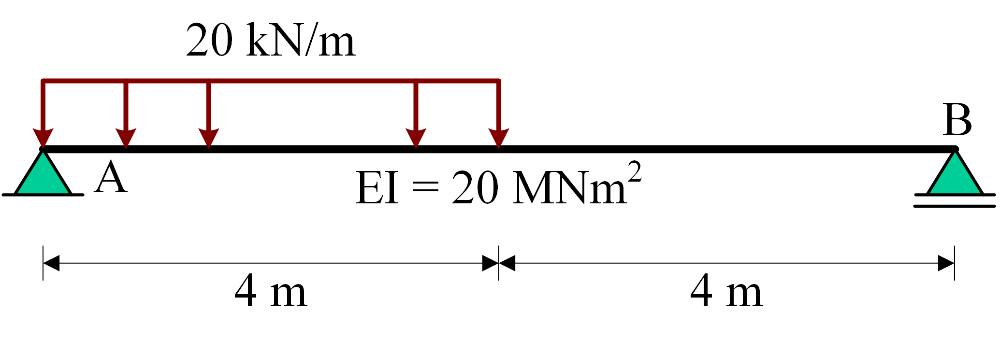
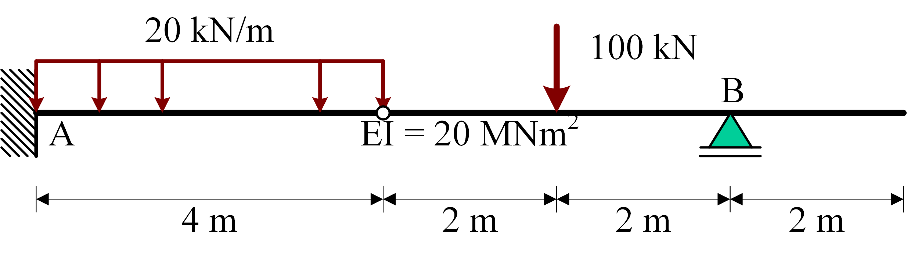
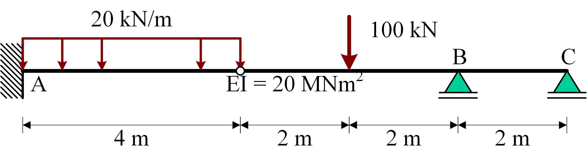

Singularity functions
Contents
Singularity functions#
Static determinate structure#
M- and V-line#
In this notebook, we’re solving beam equations using Macaulay’s method.

As this is a statically determinate structure, first the \(M\)- and \(V\)-line are solved for.
import sympy as sp
C1, C2, x, EI = sp.symbols('C1, C2, x, EI')
A_v, B_v = sp.symbols('A_v, B_v')
q0 = sp.symbols('q0')
The function \(q(x)\) is specified as a function of all external forces + support reactions
q = A_v * sp.SingularityFunction(x,0,-1) + q0 *sp.SingularityFunction(x,0,0) - q0*sp.SingularityFunction(x,4,0) + B_v * sp.SingularityFunction(x,8,-1)
display(q)
The functions \(V_1(x)\) and \(M_1(x)\) are calculated as integrals of \(q(x)\). These represent the sum of vertical and sum of moments up to a position \(x\).
V1 = -sp.integrate(q,x)
display(V1)
M1 = sp.integrate(V1,x)
display(M1)
Now the force and moment equilibria can be specified by substituting \(x=8\) for the equilibrium of the whole structure.
eq1 = sp.Eq(V1.subs(x,8),0)
eq2 = sp.Eq(M1.subs(x,8),0)
display(eq1)
display(eq2)
The three unknown support reactions can now be solved
sol = sp.solve((eq1,eq2),(A_v,B_v))
display(sol)
{A_v: -3*q0, B_v: -q0}
The \(M-\) and \(V-\)lines can now be found by subsituting our support reactions. The result with singularity-functions can rewritten as a piecewise function aswell, which clearly shows a valid result.
M_sol = M1.subs(sol)
display(M_sol)
display(sp.simplify(M_sol.rewrite(sp.Piecewise)))
V_sol = V1.subs(sol)
display(V_sol)
display(sp.simplify(V_sol.rewrite(sp.Piecewise)))
M_subs = M_sol.subs(q0,20)
display(M_subs)
display(sp.simplify(M_subs.rewrite(sp.Piecewise)))
sp.plot(-M_subs,(x,0,8))
V_subs = V_sol.subs(q0,20)
display(V_subs)
display(sp.simplify(V_subs.rewrite(sp.Piecewise)))
sp.plot(-V_subs,(x,0,8));
The influence of the support reactions and load can be splitted:
p0 = sp.plotting.plot(-M_subs.args[3],(x,-2,10),label='$'+sp.latex(M_subs.args[3])+'$'+": Moment due to support reaction $A_v$",legend=True,show=False)
p1 = sp.plotting.plot(-M_subs.args[0],(x,-2,10),label='$'+sp.latex(M_subs.args[0])+'$'+": Moment due to start of load $q$",show=False)
p2 = sp.plotting.plot(-M_subs.args[1],(x,-2,10),label='$'+sp.latex(M_subs.args[1])+'$'+": Moment due to end of load $q$",show=False)
p3 = sp.plotting.plot(-M_subs.args[2],(x,-2,10),label='$'+sp.latex(M_subs.args[2])+'$'+": Moment due to support reaction $B_v$",show=False)
p4 = sp.plotting.plot(-M_subs,(x,0,8),label='$M$: all moments added',show=False)
p0.append(p1[0])
p0.append(p2[0])
p0.append(p3[0])
p0.append(p4[0])
p0.show()

p0 = sp.plotting.plot(-M_subs.args[3]-M_subs.args[0],(x,0,4),label='$'+sp.latex(M_subs.args[3])+sp.latex(M_subs.args[0])+'$'+": Moments from $x = 0$",legend=True,show=False)
p2 = sp.plotting.plot(-M_subs.args[3]-M_subs.args[0]-M_subs.args[1],(x,4,8),label='$'+sp.latex(M_subs.args[3])+sp.latex(M_subs.args[0])+sp.latex(M_subs.args[1])+'$'+": Moments from $x = 4$",show=False)
p0.append(p2[0])
p0.show()
Displacements#
The displacement is found by integrating and solving for with the boundary conditions:
kappa = M_sol / EI
phi = sp.integrate(kappa,x)+C1
display(phi)
w = -sp.integrate(phi,x) + C2
display(w)
eq3 = sp.Eq(w.subs(x,0),0)
display(eq3)
eq4 = sp.Eq(w.subs(x,8),0)
display(eq4)
sol = sp.solve((eq3,eq4),(C1,C2))
w_sol = w.subs(sol)
phi_sol = phi.subs(sol)
w_subs = w_sol.subs(((q0,20),(EI,10e-2 * 2e5)))
phi_subs = phi_sol.subs(((q0,20),(EI,10e-2 * 2e5)))
display(phi_subs)
display(sp.simplify(phi_subs.rewrite(sp.Piecewise)))
sp.plot(-phi_subs,(x,0,8))
display(w_subs)
display(sp.simplify(w_subs.rewrite(sp.Piecewise)))
sp.plot(-w_subs,(x,0,8));
Again, the influence of the support reactions and load can be splitted:
p0 = sp.plotting.plot(-w_subs.args[1],(x,-2,10),label='$'+sp.latex(w_subs.args[1])+'$'+": Displacement due to integration constant",legend=True,show=False)
p1 = sp.plotting.plot(-w_subs.args[2],(x,-2,10),label='$'+sp.latex(w_subs.args[2])+'$'+": Displacement due to support reaction $A_v$",show=False)
p2 = sp.plotting.plot(-w_subs.args[0],(x,-2,10),label='$'+sp.latex(w_subs.args[0])+'$'+": Displacement due to start of load $q$",show=False)
p3 = sp.plotting.plot(-w_subs.args[3],(x,-2,10),label='$'+sp.latex(w_subs.args[3])+'$'+": Displacement due to end of load $q$",show=False)
p4 = sp.plotting.plot(-w_subs.args[4],(x,-2,10),label='$'+sp.latex(w_subs.args[4])+'$'+": Displacement due to support reaction $B_v$",show=False)
p5 = sp.plotting.plot(-w_subs,(x,-2,10),label='$w$: all displacements added',show=False)
p0.append(p1[0])
p0.append(p2[0])
p0.append(p3[0])
p0.append(p4[0])
p0.append(p5[0])
p0.show()
Hinged beam#
Finding \(M\)- and \(V\)-line#

As this is again a statically determinate structure, first the \(M\)- and \(V\)-line are solved for.
C1, C2, C3, C4, C5, x, EI = sp.symbols('C1, C2, C3, C4, C5, x, EI')
A_m, A_v, B_v = sp.symbols('A_m, A_v, B_v')
q0 = sp.symbols('q0')
F = sp.symbols('F')
q = A_m * sp.SingularityFunction(x,0,-2) + A_v * sp.SingularityFunction(x,0,-1) + q0 *sp.SingularityFunction(x,0,0)- q0*sp.SingularityFunction(x,4,0) + F * sp.SingularityFunction(x,6,-1) + B_v * sp.SingularityFunction(x,8,-1)
display(q)
V1 = -sp.integrate(q,x)
display(V1)
M1 = sp.integrate(V1,x)
display(M1)
Now the force and moment equilibria can be specified by substituting \(x=10\) for the equilibrium of the whole structure and \(x=4\) for the equilibrium of the structure up to the hinge.
eq1 = sp.Eq(V1.subs(x,10),0)
eq2 = sp.Eq(M1.subs(x,10),0)
eq3 = sp.Eq(M1.subs(x,4),0)
display(eq1)
display(eq2)
display(eq3)
The three unknown support reactions can now be solved
sol = sp.solve((eq1,eq2,eq3),(A_m,A_v,B_v))
display(sol)
{A_m: 2*F + 8*q0, A_v: -F/2 - 4*q0, B_v: -F/2}
The \(M-\) and \(V-\)lines can now be found by subsituting our support reactions
M_sol = M1.subs(sol)
display(M_sol)
display(sp.simplify(M_sol.rewrite(sp.Piecewise)))
V_sol = V1.subs(sol)
M_subs = M_sol.subs(((q0,20),(F,100)))
display(M_subs)
display(sp.simplify(M_subs.rewrite(sp.Piecewise)))
sp.plot(-M_subs,(x,0,10))
display(V_sol)
display(sp.simplify(V_sol.rewrite(sp.Piecewise)))
V_subs = V_sol.subs(((q0,20),(F,100)))
display(V_subs)
display(sp.simplify(V_subs.rewrite(sp.Piecewise)))
sp.plot(-V_subs,(x,0,10));
C:\Users\tomvanwoudenbe\Anaconda3\lib\site-packages\sympy\plotting\plot.py:1618: RuntimeWarning: invalid value encountered in double_scalars
cos_theta = dot_product / (vector_a_norm * vector_b_norm)
Finding \(W\)- and \(\phi\)-line#
Now the displacement function is solved for. An unknown jump in the \(\phi\)-line (and consequently kink in the \(w\)-line) is added to account for the hinge.
kappa = M_sol.subs(sol) / EI
phi = sp.integrate(kappa,x)+C1 + C2*sp.SingularityFunction(x,4,0)
display(phi)
w = -sp.integrate(phi,x) + C3
display(w)
eq4 = sp.Eq(w.subs(x,0),0)
display(eq4)
eq5 = sp.Eq(phi.subs(x,0),0)
display(eq5)
eq6 = sp.Eq(w.subs(x,8),0)
display(eq6)
sol = sp.solve((eq4,eq5,eq6),(C1,C2,C3))
w_sol = w.subs(sol)
display(w_sol)
display(sp.simplify(w_subs.rewrite(sp.Piecewise)))
phi_sol = phi.subs(sol)
sp.plot(-phi_sol.subs(((q0,20),(F,100),(EI, 10e-2 * 2e5))),(x,0,10));
sp.plot(-w_sol.subs(((q0,20),(F,100),(EI, 10e-2 * 2e5))),(x,0,10));
Directly solving displacements#
Now the same problem is solved directly for the displacements
q = A_m * sp.SingularityFunction(x,0,-2) + A_v * sp.SingularityFunction(x,0,-1) + 20 *sp.SingularityFunction(x,0,0)-20*sp.SingularityFunction(x,4,0) + 100 * sp.SingularityFunction(x,6,-1) + B_v * sp.SingularityFunction(x,8,-1)
V = -sp.integrate(q,x)
M = sp.integrate(V,x)
eq1 = sp.Eq(V.subs(x,10),0)
eq2 = sp.Eq(M.subs(x,10),0)
eq3 = sp.Eq(M.subs(x,4),0)
display(eq1)
display(eq2)
display(eq3)
kappa = M / EI
phi = sp.integrate(kappa,x) + C1 + C2*sp.SingularityFunction(x,4,0)
w = -sp.integrate(phi,x) + C3
display(w)
eq4 = sp.Eq(w.subs(x,0),0)
display(eq4)
eq5 = sp.Eq(phi.subs(x,0),0)
display(eq5)
eq6 = sp.Eq(w.subs(x,8),0)
display(eq6)
sol = sp.solve((eq1,eq2,eq3,eq4,eq5,eq6),(C1,C2,C3,A_m,A_v,B_v))
display(sol)
{C1: 0, C2: 940/EI, C3: 0, A_m: 360, A_v: -130, B_v: -50}
M_sol = M.subs(sol)
display(sp.simplify(M_sol.rewrite(sp.Piecewise)))
display(M_sol)
sp.plot(-M_sol.subs(EI, 10e-2 * 2e5),(x,0,10))
w_sol = w.subs(sol)
display(w_sol)
display(sp.simplify(w_sol.rewrite(sp.Piecewise)))
sp.plot(-w_sol.subs(EI, 10e-2 * 2e5),(x,0,10));
Statically indeterminate structure#
Now a statically indeterminate structure is solved,

This adds one additional support reaction to be solved, but the additional equation is provided by \(w(10)=0\)
C_v = sp.symbols('C_v')
q = A_m * sp.SingularityFunction(x,0,-2) + A_v * sp.SingularityFunction(x,0,-1) + 20 *sp.SingularityFunction(x,0,0)-20*sp.SingularityFunction(x,4,0) + 100 * sp.SingularityFunction(x,6,-1) + B_v * sp.SingularityFunction(x,8,-1) + C_v * sp.SingularityFunction(x,10,-1)
V = -sp.integrate(q,x)
M = sp.integrate(V,x)
eq1 = sp.Eq(V.subs(x,10),0)
eq2 = sp.Eq(M.subs(x,10),0)
eq3 = sp.Eq(M.subs(x,4),0)
display(eq1)
display(eq2)
display(eq3)
kappa = M / EI
phi = sp.integrate(kappa,x) + C1 + C2*sp.SingularityFunction(x,4,0)
w = -sp.integrate(phi,x) + C3
display(w)
eq4 = sp.Eq(w.subs(x,0),0)
display(eq4)
eq5 = sp.Eq(phi.subs(x,0),0)
display(eq5)
eq6 = sp.Eq(w.subs(x,8),0)
display(eq6)
eq7 = sp.Eq(w.subs(x,10),0)
display(eq7)
sol = sp.solve((eq1,eq2,eq3,eq4,eq5,eq6,eq7),(C1,C2,C3,A_m,A_v,B_v,C_v))
display(sol)
{C1: 0, C2: 1556/(3*EI), C3: 0, A_m: 202, A_v: -181/2, B_v: -337/2, C_v: 79}
display(M.subs(sol))
display(sp.simplify(M.subs(sol).rewrite(sp.Piecewise)))
sp.plot(-M.subs(sol),(x,0,10))
display(V.subs(sol))
display(sp.simplify(V.subs(sol).rewrite(sp.Piecewise)))
sp.plot(-V.subs(sol),(x,0,10))
display(w_sol.subs(sol))
display(sp.simplify(w_sol.subs(sol).rewrite(sp.Piecewise)))
sp.plot(-w_sol.subs(EI,10e-2 * 2e5).subs(sol),(x,0,10));